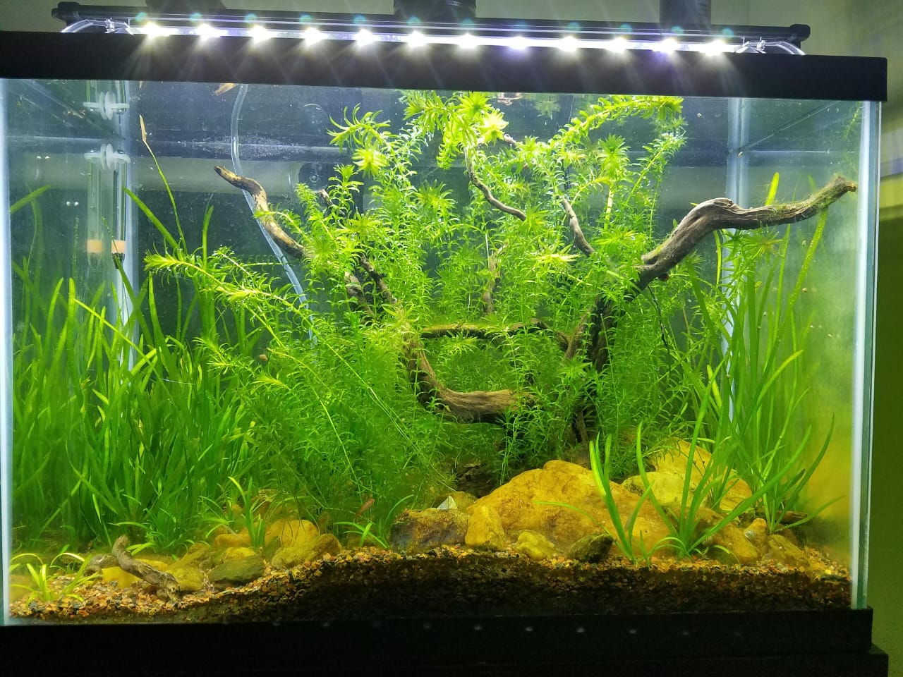
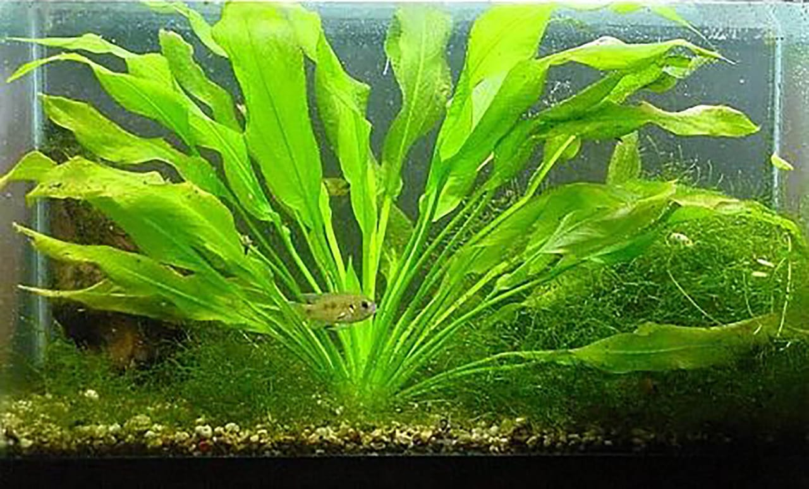

TROPICAL
PLANTS AND ITS USES
1.MONEY PLANT
Money plants can be placed on the top of the aquarium and allowed to grow roots in the water. This is beneficial for both plants and aquariums as it absorbs nitrates and uses them for growth. With adequate light, the money plant will thrive. It is also a Vastu plant that is known to bring fortune to the home and make it look aesthetically appealing.
2.JAVA MOSS
Java moss is one of the most common aquarium plants, which is easy to maintain and difficult to kill. It can tolerate the temperature around 22-32 degree celsius. The growth accelerates in medium-high lighting conditions. The java moss has been known to float; therefore, it is advised to attach it to something to prevent any float away.
3.ANACHARIS

Anacharis is another easy-to-care, low-maintenance aquarium plant. It has dark green leaves that provide a lush feel to aquariums. Anacharis can adapt to a wide range of water conditions but thrive in temperatures around 22-25 degree celsius. It grows well in moderate light, whereas if the lighting is too high, it promotes the growth of green algae hair on Anacharis. It can be planted directly on a surface or left to float.
4.JAVA FERN
Java Fern is a popular aquarium plant that is best suited for beginners. It is a low maintenance plant and is quite popular among people because of its unique shape. Java fern grows best in water that’s 22-25 degree celsius. The growth is optimal in low-medium lighting. It can be planted in any area of the aquarium without distracting from the hardscape
5.HORN WORT
Hornwort is another low-maintenance aquarium plant that floats freely on the surface of the aquarium. It has the ability to survive in a wide range of temperatures. Hornwort can grow up to 24 inches and can be simply propagated by cutting down the stems. It needs minimal lighting to thrive. It is recommended to plant hornwort in the substrate to allow lighting to reach the underlying plants.
6.AMAZON SWORD

Amazon sword is a fantastic plant for aquariums. It is easy to maintain and can grow in a wide range of conditions. Amazon sword is the perfect aquarium plant for beginners as it can survive well with a low level of nutrients and lighting. It needs direct lighting and tperature around 22-27 degree celsius and usually grows up to 20 inches tall.
BACK
MORE PLANTS ARE ALSO AVAILABLE